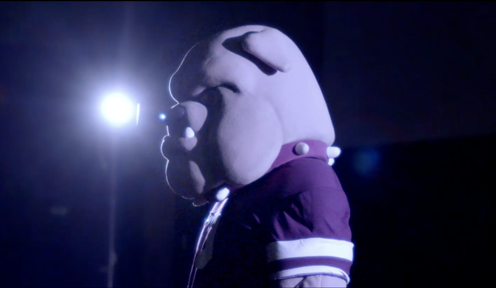
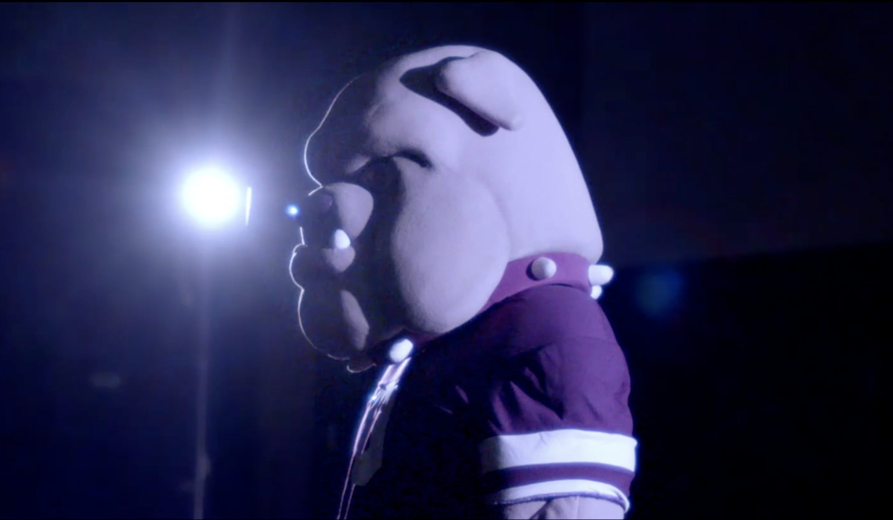
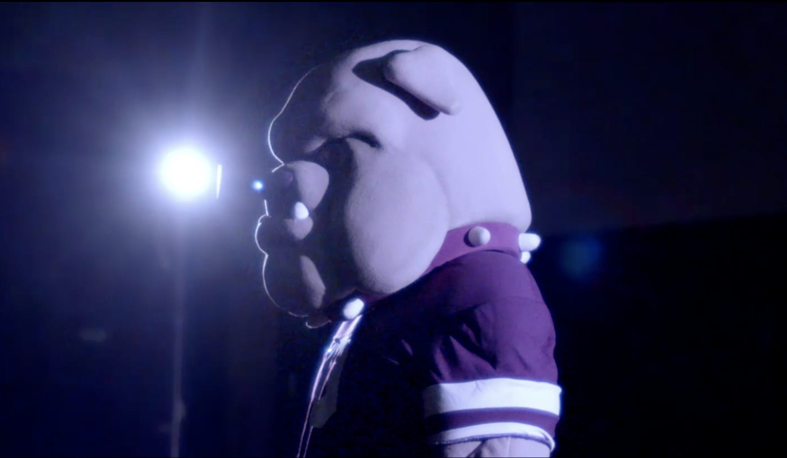

John Doe
First-year TFDP (Theater, Film, & Digital Production) student at University of California, Riverside. I develop my passion in visual arts and use the skills to benefit my community and beyond. With my broad experience in different fields of art, I wish to explore my definition of art as my career.
My inspiration when creating artwork comes from my subject's story; I love to immerse myself into their shoes and view the world with their perspective. Stories are like many sparkles around our lives when one lights up the rest arise, forming a resemblance of fireworks lighting up the world. All the sparkles are shining upon the sky.
To capture the feeling around people's stories, I will study the virtue of art to explore the world through my flashes in animation. Lastly, I can express my feelings with a deeper sense of impression in perceiving various aspects to tell stories.
Experience
Video Editoe
• Edit the biwekly show
• Speak to producer with effective communication
• Experience with Adobe Photoshop, Illustearot, Premiere Pro, Lightroom Classic, and After Effect
Graphic Design
• Instruct students how to use Adobe Photoshop and Illustrator
• Create study guide for students to better study the exam
Annual Fine Arts Week
• Edit a video of all learner's artwork
• Establish a thoroughly communication the staff and student body
• Created content to help promote student artistic talent
• Create shimmering memory to all partcipant
Education
Portola High School
University of California Riverside
Portfolio

 

